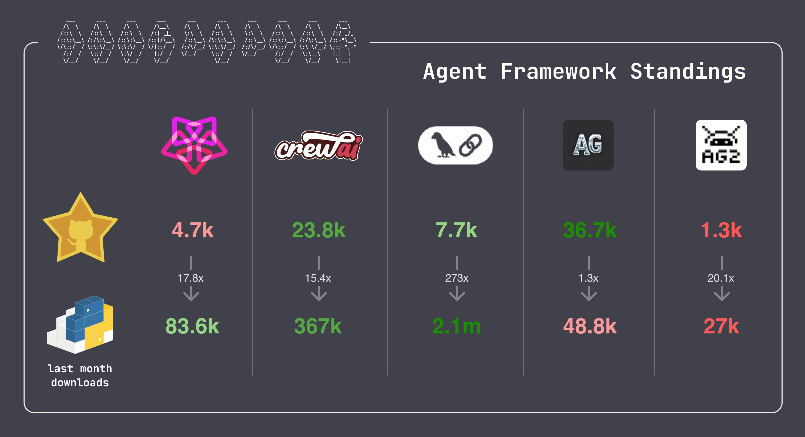

Definitions
- What are AI agents? (IBM, Jul-2024)

- "AI agents are compound AI systems where an LLM is in charge of the control logic"
- Introduction to Agents (Hugging Face, Jan-2025)
- "AI Agents are programs where LLM outputs control the workflow"
- Building effective agents (Anthropic, Dec-2024)
- "AI Agents are systems where LLMs dynamically direct their own processes and tool usage"
- Agents (Chip Huyen, Jan-2025)
- "AI is the brain that processes, plans, and determines whether a task has been accomplished"
- Introducing ambient agents (Langchain, Jan-2025)
- "Ambient agents listen to an event stream and act on it accordingly, potentially acting on multiple events at a time"
Examples
- Social media agent (Langchain, Jan-2025)
- Real-time voice agent (OpenAI, Jan-2025)
- Agentic document workflows (LlamaIndex, Jan-2025)
Frameworks
- Pydantic
- CrewAI
- Langchain
- Autogen
- AG2
